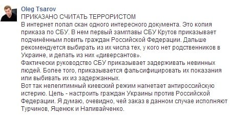
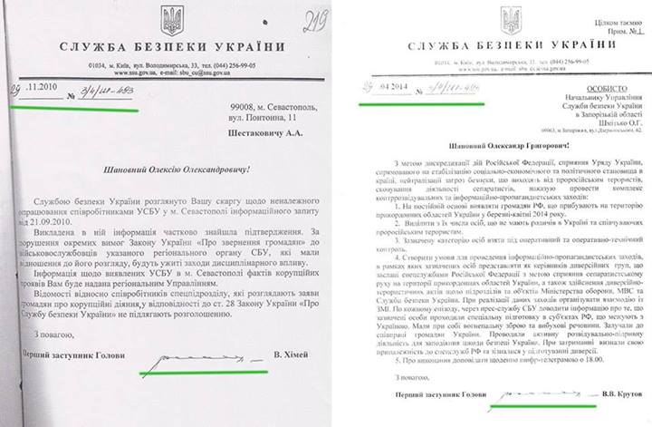

Ложь: СБУ приказало своим сотрудникам ловить граждан РФ и делать из них «диверсантов»
Народный депутат Украины Олег Царев 14 мая 2014 года написал на своей странице в Фейсбук о том, что Служба безопасности Украины (СБУ) якобы приказала своим подчиненным ловить граждан Российской Федерации, чтобы впоследствии объявлять их «диверсантами».
«В интернет попал скан одного интересного документа.Это копия приказа по СБУ.В нем первый замглавы СБУ Крутов приказывает подчинённым ловить граждан Российской Федерации.Дальше рекомендуется выбирать из их числа тех, у кого нет родственников в Украине, и делать из них «диверсантов».Фактически руководство СБУ приказывает задерживать невинных людей.Более того, приказывается фальсифицировать их показания или выбивать их из задержанных», — написал Олег Царев.
В подтверждение своих слов Царев опубликовал на своей странице якобы скан упомянутой копии.
Эту новость растираживали некоторые СМИ.В частности, российский Первый канал сделал из нее целый сюжет:
https://www.youtube.com/watch?v=3c0xHcP07u0
Однако скан документа является подделкой.Об этом на своей странице в Фейсбук написала украинская журналистка Ирина Соломко.
«Фейковые документы , которые якобы свидетельствуют о приказе СБУ своим сотрудникам фальсифицировать данные о «шпионах из РФ» , были сфальсифицированы в Крыму и распространены депутатом от ПР Олегом Царевым.
Об этом свидетельствует оригинал документа, на основе которого было сделано фальшивку.Это ответ СБУ на жалобу жителя Севастополя Шестаковича, направленный ему еще в ноябре 2010 года.
Поддельщики в графическом редакторе добавили документу гриф «Совершенно секретно», изменили текст, адресата, месяц и год.Одновременно дата, а также исходящий номер документа, написанные от руки тем же почерком, остались идентичными.Остался и подпись, которая принадлежит не Крутову, а тогдашнему заместителю председателя СБУ Химею.
Кроме того, горе-фальсификаторы не учли, что СБУ уже более года использует бланки другого образца, и допустили в тексте ряд ошибок — русизмов», — написала Ирина Соломко.
В доказательство своих слов журналистка опубликовала два документа: скан, на который ссылается Царев, и скан жалобы жителя Севастополя (нажмите на картинку, чтобы посмотреть ее в полном объеме):
Posted On: 2014-05-13T21:00:00


Content Date: 2014-05-13
Download Date: 2021-07-16
Document ID: L0C04FBWM